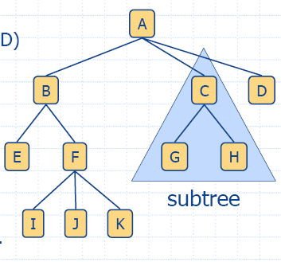

Дърво - дефиниция, терминология и основни свойства
Наредени дървета
Функции за дърво АТД
Дълбочина и височина на възел
Preorder обхождане
Postorder обхождане
Други видове обхождания
|  |
|
| Input |
Output |
||
| root() | None |
Position |
O(1) |
| parent(v) | Position | Position | O(1) |
| isInternal(v) |
Position | bool |
O(1) |
| isExternal(v) | Position | bool |
O(1) |
| isRoot(v) | Position | bool |
O(1) |
| children(v) | Position | Iterator of positions | O(cv) |
| swapElements(v,w) | Two positions |
None |
O(1) |
| replaceElement(v,e) |
A position and an object |
None |
O(1) |
| elements() | None |
Iterator of objects |
O(n) |
| positions() | None |
Iterator of positions |
O(n) |
| Algorithm preOrder(v) visit(v) for each child w of v preOrder(w) |
| Algorithm postOrder(v) for each child w of v postOrder(w) visit(v) |